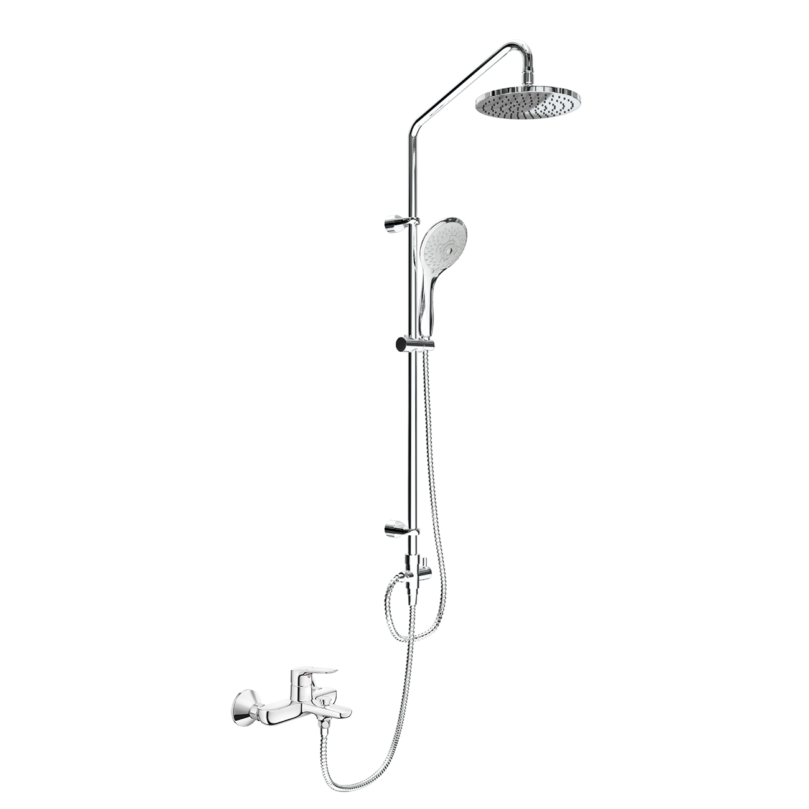
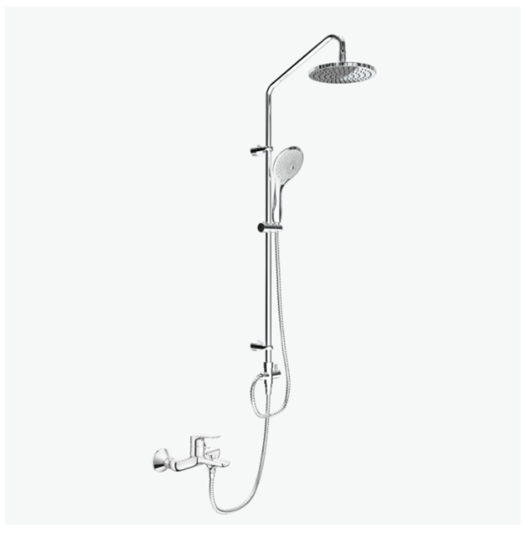
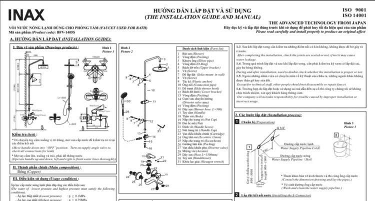

Sen cây tắm đứng BFV-1405S của INAX chính là lựa chọn hoàn hảo, kết hợp giữa thiết kế tinh tế, sang trọng và những tính năng công nghệ vượt trội, mang đến trải nghiệm tắm tuyệt vời, xoa dịu mọi căng thẳng sau một ngày dài.Đặc điểm của sen cây BFV-1405SThiết kế sang trọng, tối ưu cho không gian hiện đạiBộ vòi sen tắm đứng cao cấp INAX được thiết kế đặc biệt, thích hợp để lắp đặt trong buồng tắm vách kính, giúp không gian trở nên hài hòa và đẳng cấp. Với kiểu dáng đứng hiện đại, sản phẩm trở thành một điểm nhấn sang trọng, nâng tầm thẩm mỹ cho phòng tắm. Trong đó:Bát sen tắm lớn hình tròn là điểm nổi bật của thiết kế, mang lại dòng nước rộng lớn, ôm trọn cơ thể khi sử dụng, giúp tạo cảm giác thoải mái và sảng khoái tối đa khi tắm.Tay sen được thiết kế trang nhã với các tia nước mềm mại không chỉ làm sạch cơ thể mà còn có chức năng massage nhẹ nhàng, giúp bạn xoa dịu mọi mệt mỏi và căng thẳng.Chất lượng hoàn thiện của sản phẩm được đặt lên hàng đầu với lớp mạ Crom/Niken dày. Lớp mạ này không chỉ tạo nên độ sáng bóng bền lâu mà còn bảo vệ sản phẩm khỏi sự ăn mòn và oxy hóa, đảm bảo vẻ đẹp thách thức thời gian.Nhiều tính năng vượt trộiBộ sen cây tắm đứng INAX được tích hợp nhiều tính năng thông minh, nhằm tối ưu hóa sự tiện nghi và trải nghiệm của bạn:Điều chỉnh độ cao linh hoạt: Sản phẩm cho phép điều chỉnh độ cao của tay sen và gác sen một cách dễ dàng, phù hợp với chiều cao của từng thành viên trong gia đình, từ người lớn đến trẻ nhỏ.Tay sen đa năng: Tay sen được trang bị 5 chế độ nước khác nhau, đáp ứng mọi nhu cầu tắm rửa, từ dòng chảy êm dịu đến chế độ massage mạnh mẽ. Đặc biệt, tay sen vẫn sử dụng tốt ngay cả khi áp lực nước thấp (áp lực nước cấp 0.1 - 0.5 MPa), đảm bảo trải nghiệm không bị gián đoạn.Van gật gù điều chỉnh nhiệt độ: Van gật gù nóng lạnh giúp bạn điều chỉnh nhiệt độ nước nhanh chóng và chính xác, không cần phải chờ đợi lâu để có được nhiệt độ mong muốn.Van điều khiển sứ bền bỉ: Sản phẩm sử dụng van điều khiển bằng sứ cao cấp, nổi tiếng với độ bền vượt trội và khả năng chống rò rỉ tuyệt đối trong mọi điều kiện áp lực nước, giúp bạn an tâm sử dụng lâu dài.Vòi phun ẩn tạo bọt: Vòi phun ẩn bên trong tạo ra dòng chảy có bọt, mang lại cảm giác massage dễ chịu và mềm mại hơn khi sử dụng.Hướng dẫn lắp đặt và sử dụng sản phẩmXem thêm ở file: UM-0234_BFV-1405S_V2_2020.08.25.pdfVideo hướng dẫn lắp đặt sen cây BFV-1405SThông số kỹ thuậtChất liệuMạ Crom/NikenKiểu dángĐứngTính năng- Có khả năng điều chỉnh độ cao của tay sen phù hợp với chiều cao mỗi người- Lớp mạ Crom/Niken, tạo độ sáng bóng bền lâu- Van điều khiển bằng sứ có độ bền cao, chống rò rỉ trong mọi điều kiện áp lực- Vòi phun ẩn bên trong, dòng chảy tạo bọt massage dễ chịu- Van gật gù điều chỉnh nhiệt độ nước nhanh chóng- Tay sen với 5 chế độ nước, sử dụng được ngay cả khi áp lực nước thấp- Gác sen có thể điều chỉnh độ cao phù hợp- Áp lực nước cấp 0.1 - 0.5 MPaThương hiệuINAXThiết kế- Sen tắm đứng tiện ích khi sử dụng cho buồng tắm vách kính, mang lại cảm giác sang trọng- Tay sen kiểu dáng trang nhã với tia nước mềm mại, xoa dịu căng thẳng- Bát sen lớn hình tròn cho dòng nước ôm trọn cơ thể, tạo cảm giác thoải mái khi tắm- Lớp mạ Crom/Niken dày, tạo độ sáng bóng bền lâuKhácHotline tư vấn và bảo hành: 18006633
Sen cây BFV-1405S
Vòi chậu thương hiệu INAX.
Đã cập nhật danh sách yêu thích.
DANH MỤC: Vòi chậu
MÃ SẢN PHẨM: BFV-1405S
DEPTH: mm
HEIGHT: mm
WIDTH: mm
Sen cây tắm đứng BFV-1405S của INAX chính là lựa chọn hoàn hảo, kết hợp giữa thiết kế tinh tế, sang trọng và những tính năng công nghệ vượt trội, mang đến trải nghiệm tắm tuyệt vời, xoa dịu mọi căng thẳng sau một ngày dài.Đặc điểm của sen cây BFV-1405SThiết kế sang trọng, tối ưu cho không gian hiện đạiBộ vòi sen tắm đứng cao cấp INAX được thiết kế đặc biệt, thích hợp để lắp đặt trong buồng tắm vách kính, giúp không gian trở nên hài hòa và đẳng cấp. Với kiểu dáng đứng hiện đại, sản phẩm trở thành một điểm nhấn sang trọng, nâng tầm thẩm mỹ cho phòng tắm. Trong đó:Bát sen tắm lớn hình tròn là điểm nổi bật của thiết kế, mang lại dòng nước rộng lớn, ôm trọn cơ thể khi sử dụng, giúp tạo cảm giác thoải mái và sảng khoái tối đa khi tắm.Tay sen được thiết kế trang nhã với các tia nước mềm mại không chỉ làm sạch cơ thể mà còn có chức năng massage nhẹ nhàng, giúp bạn xoa dịu mọi mệt mỏi và căng thẳng.Chất lượng hoàn thiện của sản phẩm được đặt lên hàng đầu với lớp mạ Crom/Niken dày. Lớp mạ này không chỉ tạo nên độ sáng bóng bền lâu mà còn bảo vệ sản phẩm khỏi sự ăn mòn và oxy hóa, đảm bảo vẻ đẹp thách thức thời gian.Nhiều tính năng vượt trộiBộ sen cây tắm đứng INAX được tích hợp nhiều tính năng thông minh, nhằm tối ưu hóa sự tiện nghi và trải nghiệm của bạn:Điều chỉnh độ cao linh hoạt: Sản phẩm cho phép điều chỉnh độ cao của tay sen và gác sen một cách dễ dàng, phù hợp với chiều cao của từng thành viên trong gia đình, từ người lớn đến trẻ nhỏ.Tay sen đa năng: Tay sen được trang bị 5 chế độ nước khác nhau, đáp ứng mọi nhu cầu tắm rửa, từ dòng chảy êm dịu đến chế độ massage mạnh mẽ. Đặc biệt, tay sen vẫn sử dụng tốt ngay cả khi áp lực nước thấp (áp lực nước cấp 0.1 - 0.5 MPa), đảm bảo trải nghiệm không bị gián đoạn.Van gật gù điều chỉnh nhiệt độ: Van gật gù nóng lạnh giúp bạn điều chỉnh nhiệt độ nước nhanh chóng và chính xác, không cần phải chờ đợi lâu để có được nhiệt độ mong muốn.Van điều khiển sứ bền bỉ: Sản phẩm sử dụng van điều khiển bằng sứ cao cấp, nổi tiếng với độ bền vượt trội và khả năng chống rò rỉ tuyệt đối trong mọi điều kiện áp lực nước, giúp bạn an tâm sử dụng lâu dài.Vòi phun ẩn tạo bọt: Vòi phun ẩn bên trong tạo ra dòng chảy có bọt, mang lại cảm giác massage dễ chịu và mềm mại hơn khi sử dụng.Hướng dẫn lắp đặt và sử dụng sản phẩmXem thêm ở file: UM-0234_BFV-1405S_V2_2020.08.25.pdfVideo hướng dẫn lắp đặt sen cây BFV-1405SThông số kỹ thuậtChất liệuMạ Crom/NikenKiểu dángĐứngTính năng- Có khả năng điều chỉnh độ cao của tay sen phù hợp với chiều cao mỗi người- Lớp mạ Crom/Niken, tạo độ sáng bóng bền lâu- Van điều khiển bằng sứ có độ bền cao, chống rò rỉ trong mọi điều kiện áp lực- Vòi phun ẩn bên trong, dòng chảy tạo bọt massage dễ chịu- Van gật gù điều chỉnh nhiệt độ nước nhanh chóng- Tay sen với 5 chế độ nước, sử dụng được ngay cả khi áp lực nước thấp- Gác sen có thể điều chỉnh độ cao phù hợp- Áp lực nước cấp 0.1 - 0.5 MPaThương hiệuINAXThiết kế- Sen tắm đứng tiện ích khi sử dụng cho buồng tắm vách kính, mang lại cảm giác sang trọng- Tay sen kiểu dáng trang nhã với tia nước mềm mại, xoa dịu căng thẳng- Bát sen lớn hình tròn cho dòng nước ôm trọn cơ thể, tạo cảm giác thoải mái khi tắm- Lớp mạ Crom/Niken dày, tạo độ sáng bóng bền lâuKhácHotline tư vấn và bảo hành: 18006633
DANH MỤC: Vòi chậu
MÃ SẢN PHẨM: BFV-1405S
DEPTH: mm
HEIGHT: mm
WIDTH: mm